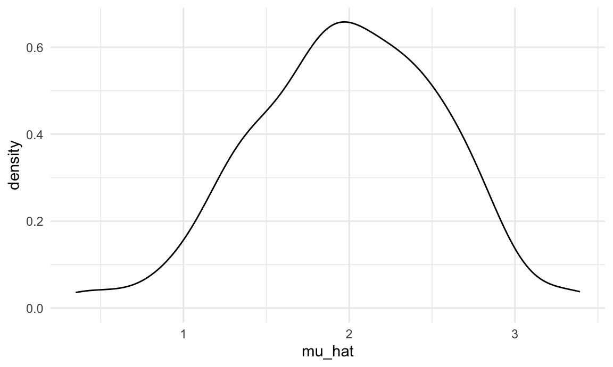
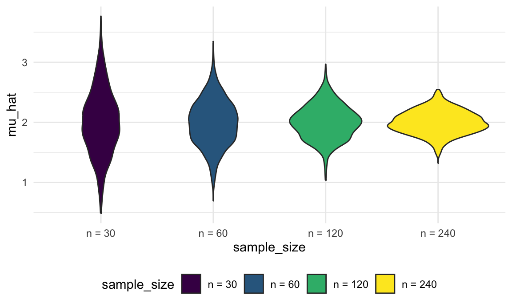
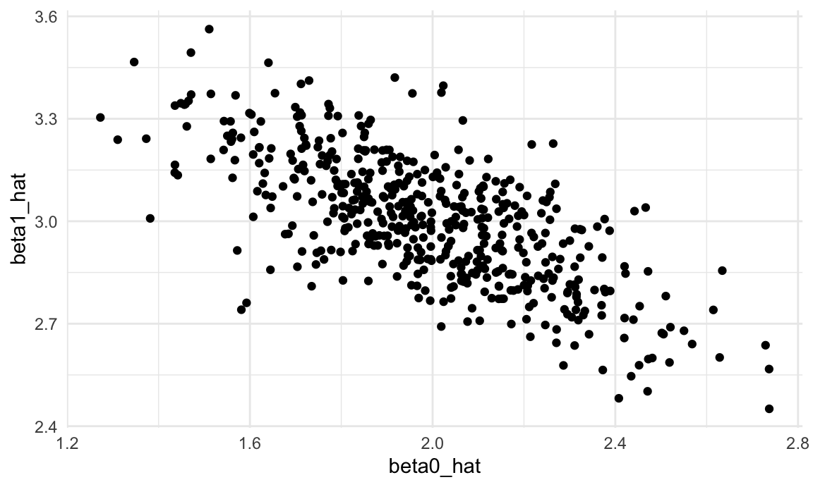
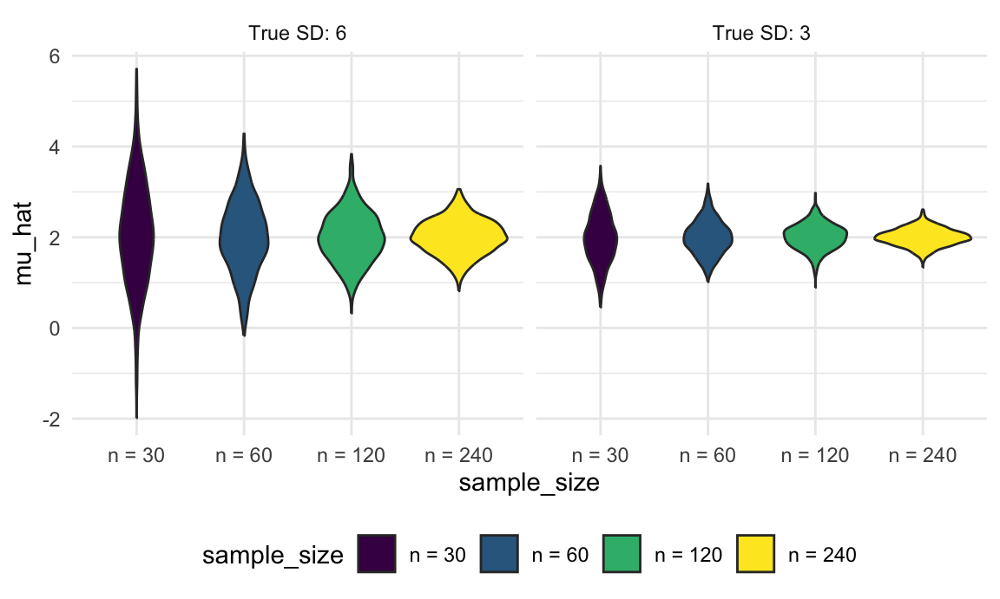

We’ve noted that functions are helpful when you repeat code more than twice; we’ve also noted that a lot of statistical methods involve doing the same thing a large number of times. Simulation is a common statistical approach that takes advantage of the ability to iterate many times using computers.
This is the third module in the Iteration topic.
Use iteration methods to simulate data, and explore statistical properties of common estimation methods under repeated sampling using simulations.
I’ll write code for today’s content in a new R Markdown document
called simulation.Rmd in the iteration
directory / repo. The code chunk below loads the usual packages and sets
a seed for reproducibility.
library(tidyverse)
set.seed(1)In writing functions we wrote a short function to simulate data from a normal distribution, and return estimates of the mean and standard deviation. Specifically, we generate data from \[ x_i \sim N[\mu, \sigma] \]
for subjects \(1 \leq i \leq n\) and return estimates
\(\hat{\mu}, \hat{\sigma}\). That function is below.
sim_mean_sd = function(n, mu = 2, sigma = 3) {
sim_data = tibble(
x = rnorm(n, mean = mu, sd = sigma),
)
sim_data |>
summarize(
mu_hat = mean(x),
sigma_hat = sd(x)
)
}Important statistical properties of estimates \(\hat{\mu}\) are established under the conceptual framework of repeated sampling. If you could draw from a population over and over, your estimates will have a known distribution:
\[ \hat{\mu} \sim \left[\mu,\frac{\sigma}{\sqrt{n}} \right]\]
Because our simulation design generates observations from a Normal distribution we also know that the estimates follow a Normal distribution, although that’s not guaranteed in general. You can do some work to understand the distribution of \(\hat{\sigma}\), but it’s … messier.
In the real world, drawing samples is time consuming and costly, so “repeated sampling” remains conceptual. On a computer, though, drawing samples is pretty easy. That makes simulation an appealing way to examine the statistical properties of your estimators.
Let’s run sim_mean_sd() 100 times to see the effect of
randomness in \(x_i\) on estimates
\(\hat{\mu}, \hat{\sigma}\).
output = vector("list", 100)
for (i in 1:100) {
output[[i]] = sim_mean_sd(30)
}
sim_results = bind_rows(output)Taking a look at the for loop we used to create these
results, you might notice that there’s no input list – the
sequence is used to keep track of the output but doesn’t affect the
computation performed inside the for loop. We can still use
map to carry this out, of course – we’ll just be mapping
over something that doesn’t change.
In the code below, I create a data frame with rows for 100
iterations; the sample size column is fixed at 30 in every row. Then,
using ideas from iteration and
list columns, I’ll map my sim_mean_sd function over the
sample_size column to replicate the simulation in the
previous loop.
sim_results_df =
expand_grid(
sample_size = 30,
iter = 1:100
) |>
mutate(
estimate_df = map(sample_size, sim_mean_sd)
) |>
unnest(estimate_df)Critically, the result is a dataframe which can be manipulated or used in ways we’re now pretty familiar with. Let’s make some quick plots and compute some summaries for our simulation results.
sim_results_df |>
ggplot(aes(x = mu_hat)) +
geom_density()
sim_results_df |>
pivot_longer(
mu_hat:sigma_hat,
names_to = "parameter",
values_to = "estimate") |>
group_by(parameter) |>
summarize(
emp_mean = mean(estimate),
emp_sd = sd(estimate)) |>
knitr::kable(digits = 3)| parameter | emp_mean | emp_sd |
|---|---|---|
| mu_hat | 1.985 | 0.567 |
| sigma_hat | 2.979 | 0.384 |
This is great! We’ve seen how our estimates are distributed under our simulation scenario, and can compare empirical results to theoretical ones. In this way, we can build intuition for fundamental statistical procedures under repeated sampling in a way that’s not possible with single data sets.
In cases like this, where the inputs to the function don’t change,
using an “anonymous” function can be a helpful shorthand. Here the
syntax (i) defines a function with the input
i, and that function just runs
sim_mean_sd(30, 2, 3) without actually using
i.
sim_results_df =
map(1:100, \(i) sim_mean_sd(30, 2, 3)) |>
bind_rows()Sample size makes a huge difference on the variance of estimates in SLR (and pretty much every statistical method). Let’s try to clarify that effect through simulating at a few sample sizes.
Building on the code above, I’ll set up a tibble with iterations and
the sample sizes I want to investigate using expand_grid.
From there, the steps are similar to they were before – we’ll apply the
sim_mean_sd function to each iteration of each sample size
and unnest the result.
sim_results_df =
expand_grid(
sample_size = c(30, 60, 120, 240),
iter = 1:1000
) |>
mutate(
estimate_df = map(sample_size, sim_mean_sd)
) |>
unnest(estimate_df)Let’s take a look at what we’ve accomplished in our simulations! First I’ll take a look at the distribution of mean estimates across sample sizes.
sim_results_df |>
mutate(
sample_size = str_c("n = ", sample_size),
sample_size = fct_inorder(sample_size)) |>
ggplot(aes(x = sample_size, y = mu_hat, fill = sample_size)) +
geom_violin()
These estimates are centered around the truth (2) for each sample size, and the width of the distribution shrinks as sample size grows.
Lastly I’ll look at the empirical mean and variance of these estimates.
sim_results_df |>
pivot_longer(
mu_hat:sigma_hat,
names_to = "parameter",
values_to = "estimate") |>
group_by(parameter, sample_size) |>
summarize(
emp_mean = mean(estimate),
emp_var = var(estimate)) |>
knitr::kable(digits = 3)## `summarise()` has grouped output by 'parameter'. You can override using the
## `.groups` argument.| parameter | sample_size | emp_mean | emp_var |
|---|---|---|---|
| mu_hat | 30 | 2.001 | 0.289 |
| mu_hat | 60 | 1.992 | 0.147 |
| mu_hat | 120 | 2.005 | 0.079 |
| mu_hat | 240 | 1.999 | 0.038 |
| sigma_hat | 30 | 2.974 | 0.154 |
| sigma_hat | 60 | 2.999 | 0.068 |
| sigma_hat | 120 | 2.996 | 0.039 |
| sigma_hat | 240 | 2.994 | 0.018 |
These values are consistent with the formula presented for the distribution of the sample mean. This kind of check is a useful way to support derivations (although they don’t serve as a formal proof in any way).
The distribution of the sample mean is critical in statistics, but behaves in often familiar ways. Next we’ll use simulations to explore another very important setting that is sometimes surprising. In particular, we’ll use a function to we generate data from \[ y_i = \beta_0 + \beta_1 x_i + \epsilon_i \]
for subjects \(1 \leq i \leq n\) with \(\epsilon_i \sim N[0,1]\) and return estimates
\(\hat{\beta}_0, \hat{\beta}_1\).
One implementation of this goal is shown below. This takes the sample
size and true regression coefficients as inputs; simulates both
x and y; fits the regression; and returns the
estimated coefficients.
sim_regression = function(n, beta0 = 2, beta1 = 3) {
sim_data =
tibble(
x = rnorm(n, mean = 1, sd = 1),
y = beta0 + beta1 * x + rnorm(n, 0, 1)
)
ls_fit = lm(y ~ x, data = sim_data)
tibble(
beta0_hat = coef(ls_fit)[1],
beta1_hat = coef(ls_fit)[2]
)
}As for the sample mean, the repeated sampling framework can be used to establish properties of estimates \(\hat{\beta}_0, \hat{\beta}_1\). If you could draw repeatedly from the population, your estimates will have a known mean and covariance:
\[ \hat{\beta}_0 \sim \left[\beta_0, \sigma^2 \left(\frac{1}{n} + \frac{\bar{x}}{\sum (x_i - \bar{x})^2}\right) \right] \mbox{ and } \hat{\beta}_1 \sim \left[\beta_1,\frac{\sigma^2}{\sum (x_i - \bar{x})^2} \right] \]
(Because our simulation design generates errors from a Normal distribution we also know that the estimates follow a Normal distribution, although that’s not guaranteed by least squares estimation.)
Again, though, “repeated sampling” remains conceptual for regression
– but we can draw samples easily in simulations. We’ll use
map to run sim_regression() 500 times and show
the effect of randomness in \(\epsilon\) on estimates \(\hat{\beta}_0, \hat{\beta}_1\).
sim_results_df =
expand_grid(
sample_size = 30,
iter = 1:500
) |>
mutate(
estimate_df = map(sample_size, sim_regression)
) |>
unnest(estimate_df)Next we’ll plot the estimated coefficients against each other (\(\hat{\beta}_0\) on the x axis and \(\hat{\beta}_1\) on the y axis). Both estimators are “unbiased”, meaning that on average you get the right answer. But what’s striking about this plot is that the estimated coefficients are inversely correlated – a lower estimate of the intercept tends to imply a higher estimate of the slope.
sim_results_df |>
ggplot(aes(x = beta0_hat, y = beta1_hat)) +
geom_point()
In our last example, we’ll consider varying two parameters – the
sample size and the true standard deviation in our simulation looking at
the mean and SD. We can use expand_grid() again to consider
all possible combinations of sample size and true SD, while also
defining a variable to look at 1000 iterations of each combination.
The key step in this code chunk is the use of map2,
which allows mapping over two inputs to a function. We can also use an
“anonymous” function which passes inputs n and
sd to specific arguments in the sim_mean_sd()
function.
sim_results_df =
expand_grid(
sample_size = c(30, 60, 120, 240),
true_sd = c(6, 3),
iter = 1:1000
) |>
mutate(
estimate_df =
map2(sample_size, true_sd, \(n, sd) sim_mean_sd(n = n, sigma = sd))
) |>
unnest(estimate_df)As before, once we have the results of this simulation, we can use graphical summaries to understand how the sample size and true SD relate to the distribution of the sample mean. For both true SDs, increasing the sample size results in a narrower distribution, and the distribution of the sample mean is wider when the true SD is larger.
sim_results_df |>
mutate(
true_sd = str_c("True SD: ", true_sd),
true_sd = fct_inorder(true_sd),
sample_size = str_c("n = ", sample_size),
sample_size = fct_inorder(sample_size)) |>
ggplot(aes(x = sample_size, y = mu_hat, fill = sample_size)) +
geom_violin() +
facet_grid(. ~ true_sd)
The code that I produced working examples in lecture is here.